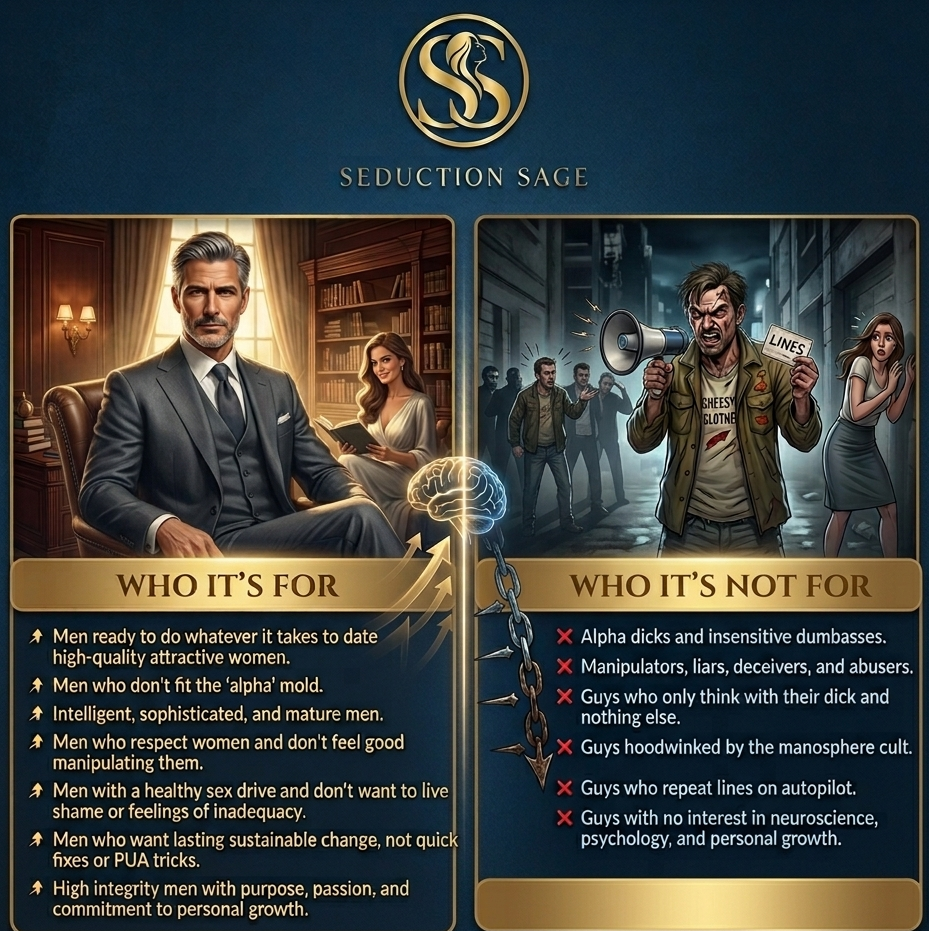

The Huntress
Strong-willed. Independent. Modern. Determined. Direct. Fierce.
The Smart Guy's Alternative to the Alpha BS
Attract Women through Consistency and Rapport: The Smart Guy's Alternative to the Alpha BS
Watch First
Start here. The method is built on consistency, rapport, and a stable masculine signal — not fake alpha posturing, manipulation, or memorized routines.
Life on the Inside
Being intimate with a high-quality woman is something you never go back from. It changes you permanently—your body, your hormones, your chemistry, your self-image, and your status in society.
Once you are on the inside, you will never have to experience that sinking feeling in your gut again—that raw wound of inadequacy, mediocrity, or being stranded on the outside looking in at a small enclave of men who enjoy all the spoils.
Instead, life opens up to you. Opportunities flood into your business and work, your social circle expands, your creative outlets ignite, and you find yourself traveling the world in a state of true abundance. That means real options and never having to settle for scraps ever again.
When high-caliber women know that you have been selected already, the entire dynamic flips. They don’t put you through endless hoops or shit-tests. They trust and respect you instantly through a concept known as Consensus Preselection. Nine-tenths of the battle is completely over. You can finally just relax, hold your center, and enjoy being around stunning women in whatever way you choose.
Enter the Griftosphere
If it’s so easy, then why are so few men succeeding at this game?
Sure, a few guys get lucky at the mall with random daygame or manage to pull a 7 at the club after a few gin and tonics. But let's look at the reality: the vast majority of them are young, and the girls they are meeting are young, impressionable, and disempowered. Almost all of the entire manosphere is directed at insecure guys who have to act like fake, hyper-aggressive “alphas” just to get attention.
But what if you are older than 19?
What if you absolutely hate acting like an alpha dick and find it demeaning? What if you are intelligent, self-aware, and actually respect women enough to refuse to manipulate your way into their panties?
If you don't fit that boyosphere mold, you often find yourself stuck in a swamp of deep frustration. You are forced to either settle into singlehood, date “Ms. Palmer,” or date women who are way below your standards out of sheer desperation. Maybe you have tried a dozen different books and programs, and they failed—or maybe you've been so repelled by the available options that you've never even tried to look further.
The “Alpha God” Cosplay Fantasy
Let’s deflate the universal alpha male sex god myth once and for all. The loud, performative dominance act is a fantasy that lives in sales funnels, not reality. The unpleasant truth is that high-value, incredibly attractive, and desirable women find the performative act immature, exhausting, and downright repelling. Mature, empowered women are not looking for Robocop to protect her or flex his vanity in front of her.
Real attraction actually starts, maybe counterintuitively, when you stop trying to act attractive. It’s not about fake dominance, and it's not about anxious catering. It is about Archetype Alignment.
When your masculine signal is locked into your genuine internal structure—whether your natural wiring is deep and analytical or powerful and influential—you stop acting like a “weather vane.” You stop shifting your personality to beg for approval. You build a trunk that does not wobble, providing a clear masculine orientation that a high-caliber woman can actually relax into.
The Four Feminine Archetypes
These are not boxes. They are emotional climates. When you can read the climate, you stop saying the wrong thing at the wrong time and start speaking to the part of her that actually responds.
Strong-willed. Independent. Modern. Determined. Direct. Fierce.
Deep. Intuitive. Soft. Soulful. Creative. Spiritually attuned.
Warm. Romantic. Emotionally rich. Loyal. Playful. Partnership-oriented.
Regal. Ambitious. Sophisticated. Guarded. Selective. High-standard.
The Dopamine Prediction Error
The human brain is fundamentally a prediction engine. When a high-caliber woman walks into a room, her mind has already calculated exactly how 99.9% of men will react: the lingering stares, the slick compliments, the subtle catering, or the fake indifference and timid avoidance.
Most pickup teachings try to hijack this by making you act erratic—hot and cold, close and distant—which only creates toxic chaos and mistrust. By being “unpredictable” you turn a negative dopamine prediction into a positive spike. It kind of works, sometimes, sort of. But actually what you end up creating for her (and eventually you), is chaos. You don't always get positive emotions. You sometimes get negative ones. And eventually a lot more negative ones than positives when she realizes she is a pawn in your little game.
Here is how to actually use DPE to your advantage. By establishing absolute, unwavering consistency first, you bring her brain back to a predictable baseline. From there, you break the pattern cleanly by accurately reading her specific psychological makeup. Instead of creating random, stressful chaos, you create a calibrated vacuum of attention that her desire naturally moves to fill. Attraction stops being a guessing game and becomes a precise, predictable loop.
The Olive Branch
Ok, here's the thing. We are offering something that you won't find anywhere else. Not on the web and not in the world. You might find shades of it but not the actual knowledge. It's a new approach to human psychology that goes deeper into the human psyche than has ever been done before. Best of all, it's so simple that anyone can use it. It doesn't matter if you are old, young, rich, poor, handsome, or aesthetically challenged. Whether you are ok with women or a complete klutz.
Because we want as many people as possible to become familiar with this methodology, we have decided to put the entire core methodology right on the table. No email gates, no tracking scripts, and no marketing traps. You can access the complete Masterclass directly in your browser as fully responsive HTML, to read anytime, anywhere.
This free foundation completely shatters the illusions keeping you stuck:

Seduction Sage Text-Only Course
Once you have read the free HTML and understand the core theory, the next step is the Seduction Sage text-only course. It is designed to teach you the specific things to do and say to attract the four types of women — Huntress, Mystic, Maiden, and Queen — without slipping into fake alpha behavior, manipulation, or random lines that do not fit you.
The course is currently discounted to $14 on Whop.
Dating Coaching & Elite Matching Networks
For men who have read the free HTML and preferably completed the course, there is a deeper pathway: dating coaching and access to elite matching networks for off-market dating opportunities.
This is for men who are serious about calibration, discretion, standards, and being introduced into better social and romantic environments.
If the form does not open your email client, write directly to northpolemethod@proton.me.
The Crossroads
Where will you be twelve months from now?
The next year is going to pass whether you take action or not. The only question is who you will become while those months pass. Will you still be stuck in the exact same loop—replaying old conversations, chasing the wrong women, second-guessing every text message, and wondering why your presence feels completely flat? Or will you be the man who finally calibrated his signal, locked into his mojo, and started naturally attracting the kind of stunning women he used to place on a distant pedestal?
We have already helped over 2,500+ intelligent men settle into their masculine center and unlock massive structural shifts using clean, real-time calibration—not gimmicks, not boyosphere poison, and not endless theory.
If nothing changes, nothing changes. Your dating life, standards, and personal power will continue to drift toward whatever old habits are already running the show. Secure the trunk of the tree, and the branches will automatically bloom. Choose your path right now.